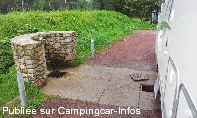

ASN = Aire de services avec stationnement nuit possible de :
SAINT FLOXEL
(N° 605)
Accès/adresse :
Le Stade
50310 SAINT FLOXEL
50310 SAINT FLOXEL
Latitude : (Nord) 49.48492° Décimaux ou 49° 29′ 5′′
Longitude : (Ouest) -1.37534° Décimaux ou -1° 22′ 31′′
Tarif : Gratuit
Services :


Table de pique-nique
Barbecue
Autres informations :
10 emplacements
Tel Office du Tourisme :
+33(0)233 411 573
http://www.officetourismemontebourg.fr/

Le 31/08/2015 par philr
Le 31/08/2015 par philr
Le 31/08/2015 par philr
Le 30/05/2014 par cricrik57
Le 17/06/2003 par mivel76
Le 17/06/2003 par mivel76
de
Bourbonnais
le 23/02/2016 :
De passage le 16/17 fev je confirme les défauts de l'aire, le sol est correct, la pente un peu forte et dans deux sens compliquant le calage, par contre joli point de vue sur Montebourg, mais attention l'aire est à côté du stade de Montebourg sur la route de ST FLOXEL et si on mentionne ST FLOXEL sur le GPS on se retrouve dans ce petit village
De passage le 16/17 fev je confirme les défauts de l'aire, le sol est correct, la pente un peu forte et dans deux sens compliquant le calage, par contre joli point de vue sur Montebourg, mais attention l'aire est à côté du stade de Montebourg sur la route de ST FLOXEL et si on mentionne ST FLOXEL sur le GPS on se retrouve dans ce petit village
de
philr
le 29/08/2015 :
Passage 26/08/2015. Incompréhensible qu'on puisse faire en 2013 une aire comme ça! 1 seule robinet pour plein eau propre et rincer K7 WC! Il faut soulever à l'aide d'une ficelle (!) une plaque de fonte au sol (40X40 cm) pour vidanger eaux usées et WC, donc bien positionner le Cc... Vraiment dommage car c'est très bien réalisé, sans doute par les hommes de l'art des services techniques. Constat amère de manque de conseils et de recherches sur Internet afin de faire qlqchose de "normal" et salubre (comme celle de Theix-56)
Passage 26/08/2015. Incompréhensible qu'on puisse faire en 2013 une aire comme ça! 1 seule robinet pour plein eau propre et rincer K7 WC! Il faut soulever à l'aide d'une ficelle (!) une plaque de fonte au sol (40X40 cm) pour vidanger eaux usées et WC, donc bien positionner le Cc... Vraiment dommage car c'est très bien réalisé, sans doute par les hommes de l'art des services techniques. Constat amère de manque de conseils et de recherches sur Internet afin de faire qlqchose de "normal" et salubre (comme celle de Theix-56)
de
Pierre 62
le 27/06/2015 :
le point d'eau ne comporte qu'un seul robinet équipé d'un filetage de très grand diamètre.
L'eau ne respecte pas les lois de la pesanteur et par dans tous les sens.
conséquence pour rincer les K7 on engage le robinet
dans la K7.
J'ai pris de l'eau ailleurs.
le point d'eau ne comporte qu'un seul robinet équipé d'un filetage de très grand diamètre.
L'eau ne respecte pas les lois de la pesanteur et par dans tous les sens.
conséquence pour rincer les K7 on engage le robinet
dans la K7.
J'ai pris de l'eau ailleurs.
de
cricrik57
le 30/05/2014 :
Aire très calme, légèrement en pente, gravillonnée, avec table et barbecue, point d'eau gratuit, ainsi que vidange, aire située à 500m de MONTEBOURG
Aire très calme, légèrement en pente, gravillonnée, avec table et barbecue, point d'eau gratuit, ainsi que vidange, aire située à 500m de MONTEBOURG
de
Kriss
le 02/05/2013 :
L'aire est magnifiquement refaite ainsi que son accessibilité.
Beaucoup de municipalité devraient s'en inspirer.
Elle entièrement gratuite et permet d'y passer une nuit.
Bravo la mairie.
L'aire est magnifiquement refaite ainsi que son accessibilité.
Beaucoup de municipalité devraient s'en inspirer.
Elle entièrement gratuite et permet d'y passer une nuit.
Bravo la mairie.
de
Tribhou
le 30/05/2012 :
Aire bien améliorée, mais le robinet d'eau (gratuite) est détérioré.
Dommage car elle est bien située et il y a une pancarte (petite !) à l'entrée de la route
Aire bien améliorée, mais le robinet d'eau (gratuite) est détérioré.
Dommage car elle est bien située et il y a une pancarte (petite !) à l'entrée de la route
de
Odile07
le 24/08/2011 :
Aire difficile à trouver. Elle est située juste à côté du stade Lecacheux, tout de suite à l'entrée du village à droite,sur la D974 en venant de Ste Mère l'Eglise. De passage le 5 août 2011, la montée au stade était en travaux ( presque terminés ). Mise à disposition d'un barbecue sur l'aire. Aire très calme et proche du village.
Aire difficile à trouver. Elle est située juste à côté du stade Lecacheux, tout de suite à l'entrée du village à droite,sur la D974 en venant de Ste Mère l'Eglise. De passage le 5 août 2011, la montée au stade était en travaux ( presque terminés ). Mise à disposition d'un barbecue sur l'aire. Aire très calme et proche du village.
de
Paulopicardie
le 22/06/2011 :
De passage sur cette aire de service mi-juin 2011, effectivement mal indiqué,chemin toujours défoncé, l'office du tourisme me dis que des travaux seront effectués très prochainement Sinon très calme et proche du village, pas mal de comerçants.
De passage sur cette aire de service mi-juin 2011, effectivement mal indiqué,chemin toujours défoncé, l'office du tourisme me dis que des travaux seront effectués très prochainement Sinon très calme et proche du village, pas mal de comerçants.
de
luc
le 22/04/2010 :
Bonjour à tous. A peine entré dans le village en venant de Ste-Mère-Eglise, sur la droite est indiquée l'aire de services Camping-Cars, de couleur grenat et non bleu, avec d'autres indications. Je le précise, car j'ai raté l'entrée du petit chemin toujours défoncé menant à l'aire qui est toujours gratuite. Merci à la commune ! Aire avec poubelle, container pour verre, vidange eaux noires et grises, un robinet poussoir où une personne a eu la bonne idée de mettre un morceau de ficelle pour maintenir le robinet ouvert. Très calme comme endroit, magnifique village. Bonne route à tous.
Bonjour à tous. A peine entré dans le village en venant de Ste-Mère-Eglise, sur la droite est indiquée l'aire de services Camping-Cars, de couleur grenat et non bleu, avec d'autres indications. Je le précise, car j'ai raté l'entrée du petit chemin toujours défoncé menant à l'aire qui est toujours gratuite. Merci à la commune ! Aire avec poubelle, container pour verre, vidange eaux noires et grises, un robinet poussoir où une personne a eu la bonne idée de mettre un morceau de ficelle pour maintenir le robinet ouvert. Très calme comme endroit, magnifique village. Bonne route à tous.
de
philippe
le 23/10/2006 :
C'est vrai que ce n'est pas le grand luxe, que le chemin d'accès est étroit et bosselé, qu'il y a le nécessaire sans plus.
C'est calme mais pas vraiment engageant pour y stationner.
Néammoins c'est gratuit, jamais encombré sansfiles d'attentes et sur la grande route quand on revient du nord du cotentin si agréable pour un week end ou un séjour plus prolongé et je m'y arréte volontiers pour refaire le plein, vider les trop pleins (!) et faire le ménage !
Il est en fait dommage qu'il n'y ait pas plus d'aires de service où l'eau est gratuite ou sinon délivrée par un robinet NORMAL ! Car sans nécessairement la gaspiller, c'est vraiment pénible et agaçant de devoir rester le doigt sur le bouton poussoir de la borne d'eau pour faire le plein.
C'est vrai que ce n'est pas le grand luxe, que le chemin d'accès est étroit et bosselé, qu'il y a le nécessaire sans plus.
C'est calme mais pas vraiment engageant pour y stationner.
Néammoins c'est gratuit, jamais encombré sansfiles d'attentes et sur la grande route quand on revient du nord du cotentin si agréable pour un week end ou un séjour plus prolongé et je m'y arréte volontiers pour refaire le plein, vider les trop pleins (!) et faire le ménage !
Il est en fait dommage qu'il n'y ait pas plus d'aires de service où l'eau est gratuite ou sinon délivrée par un robinet NORMAL ! Car sans nécessairement la gaspiller, c'est vraiment pénible et agaçant de devoir rester le doigt sur le bouton poussoir de la borne d'eau pour faire le plein.
de
colette
le 08/08/2006 :
Contrairement aux précédents commentaires, cette aire de service est très mal entretenue.
Lors de notre passage fin juin, il a été impossible de faire nos vidanges : bouchées.
Il vaudrait mieux que la borne d'eau soit payante ce qui permettrait l'entretien.
Quant au barbecue et coin pique nique : inutilisable.
Par contre le village est magnifique.
Contrairement aux précédents commentaires, cette aire de service est très mal entretenue.
Lors de notre passage fin juin, il a été impossible de faire nos vidanges : bouchées.
Il vaudrait mieux que la borne d'eau soit payante ce qui permettrait l'entretien.
Quant au barbecue et coin pique nique : inutilisable.
Par contre le village est magnifique.
de
Pierre71
le 01/08/2005 :
Simple et bien conçue, c'est simpa pour la taille du village
Simple et bien conçue, c'est simpa pour la taille du village
de
Laurent
le 24/04/2005 :
La route qui y mène est trés étroite et en piteux état.
Présence trés proche des poubelles et manque
de propreté.
Mais c'est gratuit et calme.
La route qui y mène est trés étroite et en piteux état.
Présence trés proche des poubelles et manque
de propreté.
Mais c'est gratuit et calme.
de
eric
le 03/05/2004 :
Vraiment sympa, Calme,possibilité de faire un barbecue (fixe en pierre !) table pour manger dehors et tout ça gratuit !!!!
Bravo la municipalité de Montebourg
Eric
Vraiment sympa, Calme,possibilité de faire un barbecue (fixe en pierre !) table pour manger dehors et tout ça gratuit !!!!
Bravo la municipalité de Montebourg
Eric